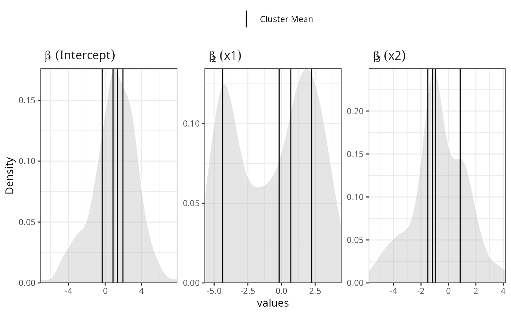

This function generates desity plots with the posterior distribution generated by the function hdpGLM
# S3 method for dpGLM plot(x, terms = NULL, separate = FALSE, hpd = TRUE, true.beta = NULL, title = NULL, subtitle = NULL, adjust = 1, ncols = NULL, only.occupied.clusters = TRUE, focus.hpd = FALSE, legend.position = "top", colour = "grey", alpha = 0.4, display.terms = TRUE, plot.mean = TRUE, legend.label.true.value = "True", ...)
| x | a dpGLM object with the samples from generated by |
|---|---|
| terms | string vector with the name of covariates to plot. If |
| separate | boolean, if |
| hpd | boolean, if |
| true.beta | either |
| title | string, the title of the plot |
| subtitle | string, the subtitle of the plot |
| adjust | the bandwidth used is actually |
| ncols | integer, the number of columns in the plot |
| only.occupied.clusters | boolean, if |
| focus.hpd | boolean, if |
| legend.position | one of four options: "bottom" (default), "top", "left", or "right". It indicates the position of the legend |
| colour | = string with color to fill the density plot |
| alpha | number between 0 and 1 indicating the degree of transparency of the density |
| display.terms | boolean, if |
| plot.mean | boolean, if |
| legend.label.true.value | a string with the value to display in the legend when the |
| ... | ignored |
# Note: this example is just for illustration. MCMC iterations are very reduced set.seed(10) n = 20 data = tibble::data_frame(x1 = rnorm(n, -3), x2 = rnorm(n, 3), z = sample(1:3, n, replace=TRUE), y =I(z==1) * (3 + 4*x1 - x2 + rnorm(n)) + I(z==2) * (3 + 2*x1 + x2 + rnorm(n)) + I(z==3) * (3 - 4*x1 - x2 + rnorm(n)) , )#> Warning: `data_frame()` is deprecated, use `tibble()`. #> This warning is displayed once per session.## estimation mcmc = list(burn.in=1, n.iter=50) samples = hdpGLM(y ~ x1 + x2, data=data, mcmc=mcmc, n.display=1)#> #> #> Preparing for estimation ... #> #> #> #> Estimation in progress ... #> #> #> #> ----------------------------------------------------- #> MCMC in progress .... #> #> Family of the distribution of the outcome variable of the mixture components: gaussian #> #> Burn-in: 1 #> Number of MCMC samples: 50 #> #> Iteration: 1 #> #> Acceptance rate for beta : 1 #> Average acceptance rate for beta : 1 #> #> Maximum Number of cluster allowed (K): 100 #> Maximum Number of cluster activated : 1 #> Current number of active clusters : 1 #> #> Percentage of data classified in each clusters k at current iteraction (displaying only clusters with more than 5% of the data) #> 1.0000e+00 #> 1.0000e+02 #> #> [=== ] 3 % #> #> ----------------------------------------------------- #> MCMC in progress .... #> #> Family of the distribution of the outcome variable of the mixture components: gaussian #> #> Burn-in: 1 #> Number of MCMC samples: 50 #> #> Iteration: 2 #> #> Acceptance rate for beta : 1 #> Average acceptance rate for beta : 1 #> #> Maximum Number of cluster allowed (K): 100 #> Maximum Number of cluster activated : 7 #> Current number of active clusters : 7 #> #> Percentage of data classified in each clusters k at current iteraction (displaying only clusters with more than 5% of the data) #> 1.0000 2.0000 3.0000 4.0000 5.0000 #> 15.0000 20.0000 25.0000 10.0000 20.0000 #> #> [===== ] 5 % #> #> ----------------------------------------------------- #> MCMC in progress .... #> #> Family of the distribution of the outcome variable of the mixture components: gaussian #> #> Burn-in: 1 #> Number of MCMC samples: 50 #> #> Iteration: 3 #> #> Acceptance rate for beta : 1 #> Average acceptance rate for beta : 1 #> #> Maximum Number of cluster allowed (K): 100 #> Maximum Number of cluster activated : 7 #> Current number of active clusters : 7 #> #> Percentage of data classified in each clusters k at current iteraction (displaying only clusters with more than 5% of the data) #> 1.0000 2.0000 3.0000 8.0000 #> 10.0000 15.0000 50.0000 10.0000 #> #> [====== ] 7 % #> #> ----------------------------------------------------- #> MCMC in progress .... #> #> Family of the distribution of the outcome variable of the mixture components: gaussian #> #> Burn-in: 1 #> Number of MCMC samples: 50 #> #> Iteration: 4 #> #> Acceptance rate for beta : 1 #> Average acceptance rate for beta : 1 #> #> Maximum Number of cluster allowed (K): 100 #> Maximum Number of cluster activated : 7 #> Current number of active clusters : 5 #> #> Percentage of data classified in each clusters k at current iteraction (displaying only clusters with more than 5% of the data) #> 1.0000 2.0000 3.0000 4.0000 8.0000 #> 10.0000 15.0000 50.0000 10.0000 15.0000 #> #> [======= ] 9 % #> #> ----------------------------------------------------- #> MCMC in progress .... #> #> Family of the distribution of the outcome variable of the mixture components: gaussian #> #> Burn-in: 1 #> Number of MCMC samples: 50 #> #> Iteration: 5 #> #> Acceptance rate for beta : 1 #> Average acceptance rate for beta : 1 #> #> Maximum Number of cluster allowed (K): 100 #> Maximum Number of cluster activated : 7 #> Current number of active clusters : 5 #> #> Percentage of data classified in each clusters k at current iteraction (displaying only clusters with more than 5% of the data) #> 1.0000 2.0000 3.0000 4.0000 #> 10.0000 15.0000 50.0000 20.0000 #> #> [========= ] 11 % #> #> ----------------------------------------------------- #> MCMC in progress .... #> #> Family of the distribution of the outcome variable of the mixture components: gaussian #> #> Burn-in: 1 #> Number of MCMC samples: 50 #> #> Iteration: 6 #> #> Acceptance rate for beta : 1 #> Average acceptance rate for beta : 1 #> #> Maximum Number of cluster allowed (K): 100 #> Maximum Number of cluster activated : 7 #> Current number of active clusters : 5 #> #> Percentage of data classified in each clusters k at current iteraction (displaying only clusters with more than 5% of the data) #> 1.0000 2.0000 3.0000 8.0000 #> 15.0000 15.0000 50.0000 15.0000 #> #> [========== ] 13 % #> #> ----------------------------------------------------- #> MCMC in progress .... #> #> Family of the distribution of the outcome variable of the mixture components: gaussian #> #> Burn-in: 1 #> Number of MCMC samples: 50 #> #> Iteration: 7 #> #> Acceptance rate for beta : 1 #> Average acceptance rate for beta : 1 #> #> Maximum Number of cluster allowed (K): 100 #> Maximum Number of cluster activated : 7 #> Current number of active clusters : 5 #> #> Percentage of data classified in each clusters k at current iteraction (displaying only clusters with more than 5% of the data) #> 1.0000 3.0000 5.0000 8.0000 #> 10.0000 45.0000 20.0000 20.0000 #> #> [=========== ] 15 % #> #> ----------------------------------------------------- #> MCMC in progress .... #> #> Family of the distribution of the outcome variable of the mixture components: gaussian #> #> Burn-in: 1 #> Number of MCMC samples: 50 #> #> Iteration: 8 #> #> Acceptance rate for beta : 1 #> Average acceptance rate for beta : 1 #> #> Maximum Number of cluster allowed (K): 100 #> Maximum Number of cluster activated : 7 #> Current number of active clusters : 6 #> #> Percentage of data classified in each clusters k at current iteraction (displaying only clusters with more than 5% of the data) #> 3.0000 4.0000 5.0000 8.0000 #> 50.0000 10.0000 10.0000 20.0000 #> #> [============= ] 17 % #> #> ----------------------------------------------------- #> MCMC in progress .... #> #> Family of the distribution of the outcome variable of the mixture components: gaussian #> #> Burn-in: 1 #> Number of MCMC samples: 50 #> #> Iteration: 9 #> #> Acceptance rate for beta : 1 #> Average acceptance rate for beta : 1 #> #> Maximum Number of cluster allowed (K): 100 #> Maximum Number of cluster activated : 7 #> Current number of active clusters : 6 #> #> Percentage of data classified in each clusters k at current iteraction (displaying only clusters with more than 5% of the data) #> 3.0000 5.0000 6.0000 8.0000 #> 45.0000 15.0000 10.0000 20.0000 #> #> [============== ] 19 % #> #> ----------------------------------------------------- #> MCMC in progress .... #> #> Family of the distribution of the outcome variable of the mixture components: gaussian #> #> Burn-in: 1 #> Number of MCMC samples: 50 #> #> Iteration: 10 #> #> Acceptance rate for beta : 1 #> Average acceptance rate for beta : 1 #> #> Maximum Number of cluster allowed (K): 100 #> Maximum Number of cluster activated : 7 #> Current number of active clusters : 4 #> #> Percentage of data classified in each clusters k at current iteraction (displaying only clusters with more than 5% of the data) #> 3.0000 4.0000 5.0000 8.0000 #> 45.0000 10.0000 20.0000 25.0000 #> #> [================ ] 21 % #> #> ----------------------------------------------------- #> MCMC in progress .... #> #> Family of the distribution of the outcome variable of the mixture components: gaussian #> #> Burn-in: 1 #> Number of MCMC samples: 50 #> #> Iteration: 11 #> #> Acceptance rate for beta : 1 #> Average acceptance rate for beta : 1 #> #> Maximum Number of cluster allowed (K): 100 #> Maximum Number of cluster activated : 7 #> Current number of active clusters : 6 #> #> Percentage of data classified in each clusters k at current iteraction (displaying only clusters with more than 5% of the data) #> 3.0000 5.0000 8.0000 #> 40.0000 20.0000 25.0000 #> #> [================= ] 23 % #> #> ----------------------------------------------------- #> MCMC in progress .... #> #> Family of the distribution of the outcome variable of the mixture components: gaussian #> #> Burn-in: 1 #> Number of MCMC samples: 50 #> #> Iteration: 12 #> #> Acceptance rate for beta : 1 #> Average acceptance rate for beta : 1 #> #> Maximum Number of cluster allowed (K): 100 #> Maximum Number of cluster activated : 7 #> Current number of active clusters : 6 #> #> Percentage of data classified in each clusters k at current iteraction (displaying only clusters with more than 5% of the data) #> 3.0000 5.0000 7.0000 8.0000 #> 50.0000 20.0000 10.0000 10.0000 #> #> [================== ] 25 % #> #> ----------------------------------------------------- #> MCMC in progress .... #> #> Family of the distribution of the outcome variable of the mixture components: gaussian #> #> Burn-in: 1 #> Number of MCMC samples: 50 #> #> Iteration: 13 #> #> Acceptance rate for beta : 1 #> Average acceptance rate for beta : 1 #> #> Maximum Number of cluster allowed (K): 100 #> Maximum Number of cluster activated : 7 #> Current number of active clusters : 6 #> #> Percentage of data classified in each clusters k at current iteraction (displaying only clusters with more than 5% of the data) #> 1.0000 3.0000 4.0000 5.0000 8.0000 #> 10.0000 45.0000 15.0000 15.0000 10.0000 #> #> [==================== ] 27 % #> #> ----------------------------------------------------- #> MCMC in progress .... #> #> Family of the distribution of the outcome variable of the mixture components: gaussian #> #> Burn-in: 1 #> Number of MCMC samples: 50 #> #> Iteration: 14 #> #> Acceptance rate for beta : 1 #> Average acceptance rate for beta : 1 #> #> Maximum Number of cluster allowed (K): 100 #> Maximum Number of cluster activated : 7 #> Current number of active clusters : 6 #> #> Percentage of data classified in each clusters k at current iteraction (displaying only clusters with more than 5% of the data) #> 1.0000 3.0000 5.0000 #> 20.0000 45.0000 20.0000 #> #> [===================== ] 29 % #> #> ----------------------------------------------------- #> MCMC in progress .... #> #> Family of the distribution of the outcome variable of the mixture components: gaussian #> #> Burn-in: 1 #> Number of MCMC samples: 50 #> #> Iteration: 15 #> #> Acceptance rate for beta : 1 #> Average acceptance rate for beta : 1 #> #> Maximum Number of cluster allowed (K): 100 #> Maximum Number of cluster activated : 7 #> Current number of active clusters : 5 #> #> Percentage of data classified in each clusters k at current iteraction (displaying only clusters with more than 5% of the data) #> 1.0000 3.0000 5.0000 8.0000 #> 10.0000 50.0000 25.0000 10.0000 #> #> [====================== ] 31 % #> #> ----------------------------------------------------- #> MCMC in progress .... #> #> Family of the distribution of the outcome variable of the mixture components: gaussian #> #> Burn-in: 1 #> Number of MCMC samples: 50 #> #> Iteration: 16 #> #> Acceptance rate for beta : 1 #> Average acceptance rate for beta : 1 #> #> Maximum Number of cluster allowed (K): 100 #> Maximum Number of cluster activated : 7 #> Current number of active clusters : 5 #> #> Percentage of data classified in each clusters k at current iteraction (displaying only clusters with more than 5% of the data) #> 1.0000 2.0000 3.0000 5.0000 #> 25.0000 10.0000 50.0000 10.0000 #> #> [======================== ] 33 % #> #> ----------------------------------------------------- #> MCMC in progress .... #> #> Family of the distribution of the outcome variable of the mixture components: gaussian #> #> Burn-in: 1 #> Number of MCMC samples: 50 #> #> Iteration: 17 #> #> Acceptance rate for beta : 1 #> Average acceptance rate for beta : 1 #> #> Maximum Number of cluster allowed (K): 100 #> Maximum Number of cluster activated : 7 #> Current number of active clusters : 4 #> #> Percentage of data classified in each clusters k at current iteraction (displaying only clusters with more than 5% of the data) #> 1.0000 2.0000 3.0000 5.0000 #> 25.0000 10.0000 50.0000 15.0000 #> #> [========================= ] 35 % #> #> ----------------------------------------------------- #> MCMC in progress .... #> #> Family of the distribution of the outcome variable of the mixture components: gaussian #> #> Burn-in: 1 #> Number of MCMC samples: 50 #> #> Iteration: 18 #> #> Acceptance rate for beta : 1 #> Average acceptance rate for beta : 1 #> #> Maximum Number of cluster allowed (K): 100 #> Maximum Number of cluster activated : 7 #> Current number of active clusters : 4 #> #> Percentage of data classified in each clusters k at current iteraction (displaying only clusters with more than 5% of the data) #> 1.0000 2.0000 3.0000 5.0000 #> 25.0000 15.0000 50.0000 10.0000 #> #> [=========================== ] 37 % #> #> ----------------------------------------------------- #> MCMC in progress .... #> #> Family of the distribution of the outcome variable of the mixture components: gaussian #> #> Burn-in: 1 #> Number of MCMC samples: 50 #> #> Iteration: 19 #> #> Acceptance rate for beta : 1 #> Average acceptance rate for beta : 1 #> #> Maximum Number of cluster allowed (K): 100 #> Maximum Number of cluster activated : 7 #> Current number of active clusters : 5 #> #> Percentage of data classified in each clusters k at current iteraction (displaying only clusters with more than 5% of the data) #> 1.0000 3.0000 5.0000 #> 25.0000 50.0000 15.0000 #> #> [============================ ] 39 % #> #> ----------------------------------------------------- #> MCMC in progress .... #> #> Family of the distribution of the outcome variable of the mixture components: gaussian #> #> Burn-in: 1 #> Number of MCMC samples: 50 #> #> Iteration: 20 #> #> Acceptance rate for beta : 1 #> Average acceptance rate for beta : 1 #> #> Maximum Number of cluster allowed (K): 100 #> Maximum Number of cluster activated : 7 #> Current number of active clusters : 4 #> #> Percentage of data classified in each clusters k at current iteraction (displaying only clusters with more than 5% of the data) #> 1.0000 3.0000 5.0000 #> 25.0000 50.0000 20.0000 #> #> [============================= ] 41 % #> #> ----------------------------------------------------- #> MCMC in progress .... #> #> Family of the distribution of the outcome variable of the mixture components: gaussian #> #> Burn-in: 1 #> Number of MCMC samples: 50 #> #> Iteration: 21 #> #> Acceptance rate for beta : 1 #> Average acceptance rate for beta : 1 #> #> Maximum Number of cluster allowed (K): 100 #> Maximum Number of cluster activated : 7 #> Current number of active clusters : 4 #> #> Percentage of data classified in each clusters k at current iteraction (displaying only clusters with more than 5% of the data) #> 1.0000 2.0000 3.0000 5.0000 #> 25.0000 10.0000 50.0000 15.0000 #> #> [=============================== ] 43 % #> #> ----------------------------------------------------- #> MCMC in progress .... #> #> Family of the distribution of the outcome variable of the mixture components: gaussian #> #> Burn-in: 1 #> Number of MCMC samples: 50 #> #> Iteration: 22 #> #> Acceptance rate for beta : 1 #> Average acceptance rate for beta : 1 #> #> Maximum Number of cluster allowed (K): 100 #> Maximum Number of cluster activated : 7 #> Current number of active clusters : 4 #> #> Percentage of data classified in each clusters k at current iteraction (displaying only clusters with more than 5% of the data) #> 1.0000 2.0000 3.0000 5.0000 #> 25.0000 10.0000 50.0000 15.0000 #> #> [================================ ] 45 % #> #> ----------------------------------------------------- #> MCMC in progress .... #> #> Family of the distribution of the outcome variable of the mixture components: gaussian #> #> Burn-in: 1 #> Number of MCMC samples: 50 #> #> Iteration: 23 #> #> Acceptance rate for beta : 1 #> Average acceptance rate for beta : 1 #> #> Maximum Number of cluster allowed (K): 100 #> Maximum Number of cluster activated : 7 #> Current number of active clusters : 4 #> #> Percentage of data classified in each clusters k at current iteraction (displaying only clusters with more than 5% of the data) #> 1.0000 2.0000 3.0000 5.0000 #> 20.0000 15.0000 50.0000 15.0000 #> #> [================================= ] 47 % #> #> ----------------------------------------------------- #> MCMC in progress .... #> #> Family of the distribution of the outcome variable of the mixture components: gaussian #> #> Burn-in: 1 #> Number of MCMC samples: 50 #> #> Iteration: 24 #> #> Acceptance rate for beta : 1 #> Average acceptance rate for beta : 1 #> #> Maximum Number of cluster allowed (K): 100 #> Maximum Number of cluster activated : 7 #> Current number of active clusters : 5 #> #> Percentage of data classified in each clusters k at current iteraction (displaying only clusters with more than 5% of the data) #> 1.0000 2.0000 3.0000 4.0000 5.0000 #> 10.0000 15.0000 50.0000 10.0000 15.0000 #> #> [=================================== ] 49 % #> #> ----------------------------------------------------- #> MCMC in progress .... #> #> Family of the distribution of the outcome variable of the mixture components: gaussian #> #> Burn-in: 1 #> Number of MCMC samples: 50 #> #> Iteration: 25 #> #> Acceptance rate for beta : 1 #> Average acceptance rate for beta : 1 #> #> Maximum Number of cluster allowed (K): 100 #> Maximum Number of cluster activated : 7 #> Current number of active clusters : 5 #> #> Percentage of data classified in each clusters k at current iteraction (displaying only clusters with more than 5% of the data) #> 2.0000 3.0000 4.0000 5.0000 #> 15.0000 50.0000 15.0000 15.0000 #> #> [==================================== ] 50 % #> #> ----------------------------------------------------- #> MCMC in progress .... #> #> Family of the distribution of the outcome variable of the mixture components: gaussian #> #> Burn-in: 1 #> Number of MCMC samples: 50 #> #> Iteration: 26 #> #> Acceptance rate for beta : 1 #> Average acceptance rate for beta : 1 #> #> Maximum Number of cluster allowed (K): 100 #> Maximum Number of cluster activated : 7 #> Current number of active clusters : 5 #> #> Percentage of data classified in each clusters k at current iteraction (displaying only clusters with more than 5% of the data) #> 2.0000 3.0000 4.0000 5.0000 #> 15.0000 50.0000 20.0000 10.0000 #> #> [====================================== ] 52 % #> #> ----------------------------------------------------- #> MCMC in progress .... #> #> Family of the distribution of the outcome variable of the mixture components: gaussian #> #> Burn-in: 1 #> Number of MCMC samples: 50 #> #> Iteration: 27 #> #> Acceptance rate for beta : 1 #> Average acceptance rate for beta : 1 #> #> Maximum Number of cluster allowed (K): 100 #> Maximum Number of cluster activated : 7 #> Current number of active clusters : 5 #> #> Percentage of data classified in each clusters k at current iteraction (displaying only clusters with more than 5% of the data) #> 2.0000 3.0000 4.0000 5.0000 #> 15.0000 45.0000 20.0000 15.0000 #> #> [======================================= ] 54 % #> #> ----------------------------------------------------- #> MCMC in progress .... #> #> Family of the distribution of the outcome variable of the mixture components: gaussian #> #> Burn-in: 1 #> Number of MCMC samples: 50 #> #> Iteration: 28 #> #> Acceptance rate for beta : 1 #> Average acceptance rate for beta : 1 #> #> Maximum Number of cluster allowed (K): 100 #> Maximum Number of cluster activated : 7 #> Current number of active clusters : 6 #> #> Percentage of data classified in each clusters k at current iteraction (displaying only clusters with more than 5% of the data) #> 1.0000 2.0000 3.0000 4.0000 5.0000 #> 15.0000 15.0000 30.0000 20.0000 15.0000 #> #> [======================================== ] 56 % #> #> ----------------------------------------------------- #> MCMC in progress .... #> #> Family of the distribution of the outcome variable of the mixture components: gaussian #> #> Burn-in: 1 #> Number of MCMC samples: 50 #> #> Iteration: 29 #> #> Acceptance rate for beta : 1 #> Average acceptance rate for beta : 1 #> #> Maximum Number of cluster allowed (K): 100 #> Maximum Number of cluster activated : 7 #> Current number of active clusters : 5 #> #> Percentage of data classified in each clusters k at current iteraction (displaying only clusters with more than 5% of the data) #> 1.0000 2.0000 3.0000 4.0000 5.0000 #> 15.0000 10.0000 35.0000 20.0000 20.0000 #> #> [========================================== ] 58 % #> #> ----------------------------------------------------- #> MCMC in progress .... #> #> Family of the distribution of the outcome variable of the mixture components: gaussian #> #> Burn-in: 1 #> Number of MCMC samples: 50 #> #> Iteration: 30 #> #> Acceptance rate for beta : 1 #> Average acceptance rate for beta : 1 #> #> Maximum Number of cluster allowed (K): 100 #> Maximum Number of cluster activated : 7 #> Current number of active clusters : 5 #> #> Percentage of data classified in each clusters k at current iteraction (displaying only clusters with more than 5% of the data) #> 2.0000 3.0000 4.0000 5.0000 #> 10.0000 45.0000 20.0000 20.0000 #> #> [=========================================== ] 60 % #> #> ----------------------------------------------------- #> MCMC in progress .... #> #> Family of the distribution of the outcome variable of the mixture components: gaussian #> #> Burn-in: 1 #> Number of MCMC samples: 50 #> #> Iteration: 31 #> #> Acceptance rate for beta : 1 #> Average acceptance rate for beta : 1 #> #> Maximum Number of cluster allowed (K): 100 #> Maximum Number of cluster activated : 7 #> Current number of active clusters : 5 #> #> Percentage of data classified in each clusters k at current iteraction (displaying only clusters with more than 5% of the data) #> 1.0000 2.0000 3.0000 4.0000 5.0000 #> 15.0000 15.0000 35.0000 20.0000 15.0000 #> #> [============================================ ] 62 % #> #> ----------------------------------------------------- #> MCMC in progress .... #> #> Family of the distribution of the outcome variable of the mixture components: gaussian #> #> Burn-in: 1 #> Number of MCMC samples: 50 #> #> Iteration: 32 #> #> Acceptance rate for beta : 1 #> Average acceptance rate for beta : 1 #> #> Maximum Number of cluster allowed (K): 100 #> Maximum Number of cluster activated : 7 #> Current number of active clusters : 6 #> #> Percentage of data classified in each clusters k at current iteraction (displaying only clusters with more than 5% of the data) #> 1.0000 2.0000 3.0000 4.0000 #> 15.0000 25.0000 35.0000 15.0000 #> #> [============================================== ] 64 % #> #> ----------------------------------------------------- #> MCMC in progress .... #> #> Family of the distribution of the outcome variable of the mixture components: gaussian #> #> Burn-in: 1 #> Number of MCMC samples: 50 #> #> Iteration: 33 #> #> Acceptance rate for beta : 1 #> Average acceptance rate for beta : 1 #> #> Maximum Number of cluster allowed (K): 100 #> Maximum Number of cluster activated : 7 #> Current number of active clusters : 7 #> #> Percentage of data classified in each clusters k at current iteraction (displaying only clusters with more than 5% of the data) #> 1.0000 2.0000 3.0000 4.0000 8.0000 #> 15.0000 15.0000 35.0000 15.0000 10.0000 #> #> [=============================================== ] 66 % #> #> ----------------------------------------------------- #> MCMC in progress .... #> #> Family of the distribution of the outcome variable of the mixture components: gaussian #> #> Burn-in: 1 #> Number of MCMC samples: 50 #> #> Iteration: 34 #> #> Acceptance rate for beta : 1 #> Average acceptance rate for beta : 1 #> #> Maximum Number of cluster allowed (K): 100 #> Maximum Number of cluster activated : 7 #> Current number of active clusters : 6 #> #> Percentage of data classified in each clusters k at current iteraction (displaying only clusters with more than 5% of the data) #> 1.0000 2.0000 3.0000 4.0000 5.0000 #> 20.0000 20.0000 25.0000 20.0000 10.0000 #> #> [================================================= ] 68 % #> #> ----------------------------------------------------- #> MCMC in progress .... #> #> Family of the distribution of the outcome variable of the mixture components: gaussian #> #> Burn-in: 1 #> Number of MCMC samples: 50 #> #> Iteration: 35 #> #> Acceptance rate for beta : 1 #> Average acceptance rate for beta : 1 #> #> Maximum Number of cluster allowed (K): 100 #> Maximum Number of cluster activated : 8 #> Current number of active clusters : 8 #> #> Percentage of data classified in each clusters k at current iteraction (displaying only clusters with more than 5% of the data) #> 1.0000 2.0000 3.0000 4.0000 #> 15.0000 20.0000 30.0000 15.0000 #> #> [================================================== ] 70 % #> #> ----------------------------------------------------- #> MCMC in progress .... #> #> Family of the distribution of the outcome variable of the mixture components: gaussian #> #> Burn-in: 1 #> Number of MCMC samples: 50 #> #> Iteration: 36 #> #> Acceptance rate for beta : 1 #> Average acceptance rate for beta : 1 #> #> Maximum Number of cluster allowed (K): 100 #> Maximum Number of cluster activated : 8 #> Current number of active clusters : 7 #> #> Percentage of data classified in each clusters k at current iteraction (displaying only clusters with more than 5% of the data) #> 1.0000 2.0000 3.0000 4.0000 5.0000 #> 20.0000 15.0000 30.0000 15.0000 10.0000 #> #> [=================================================== ] 72 % #> #> ----------------------------------------------------- #> MCMC in progress .... #> #> Family of the distribution of the outcome variable of the mixture components: gaussian #> #> Burn-in: 1 #> Number of MCMC samples: 50 #> #> Iteration: 37 #> #> Acceptance rate for beta : 1 #> Average acceptance rate for beta : 1 #> #> Maximum Number of cluster allowed (K): 100 #> Maximum Number of cluster activated : 8 #> Current number of active clusters : 5 #> #> Percentage of data classified in each clusters k at current iteraction (displaying only clusters with more than 5% of the data) #> 1.0000 2.0000 3.0000 4.0000 5.0000 #> 20.0000 10.0000 30.0000 20.0000 20.0000 #> #> [===================================================== ] 74 % #> #> ----------------------------------------------------- #> MCMC in progress .... #> #> Family of the distribution of the outcome variable of the mixture components: gaussian #> #> Burn-in: 1 #> Number of MCMC samples: 50 #> #> Iteration: 38 #> #> Acceptance rate for beta : 1 #> Average acceptance rate for beta : 1 #> #> Maximum Number of cluster allowed (K): 100 #> Maximum Number of cluster activated : 8 #> Current number of active clusters : 6 #> #> Percentage of data classified in each clusters k at current iteraction (displaying only clusters with more than 5% of the data) #> 1.0000 2.0000 3.0000 4.0000 5.0000 #> 20.0000 15.0000 30.0000 20.0000 10.0000 #> #> [====================================================== ] 76 % #> #> ----------------------------------------------------- #> MCMC in progress .... #> #> Family of the distribution of the outcome variable of the mixture components: gaussian #> #> Burn-in: 1 #> Number of MCMC samples: 50 #> #> Iteration: 39 #> #> Acceptance rate for beta : 1 #> Average acceptance rate for beta : 1 #> #> Maximum Number of cluster allowed (K): 100 #> Maximum Number of cluster activated : 8 #> Current number of active clusters : 6 #> #> Percentage of data classified in each clusters k at current iteraction (displaying only clusters with more than 5% of the data) #> 1.0000 3.0000 4.0000 5.0000 7.0000 #> 20.0000 30.0000 20.0000 15.0000 10.0000 #> #> [======================================================= ] 78 % #> #> ----------------------------------------------------- #> MCMC in progress .... #> #> Family of the distribution of the outcome variable of the mixture components: gaussian #> #> Burn-in: 1 #> Number of MCMC samples: 50 #> #> Iteration: 40 #> #> Acceptance rate for beta : 1 #> Average acceptance rate for beta : 1 #> #> Maximum Number of cluster allowed (K): 100 #> Maximum Number of cluster activated : 8 #> Current number of active clusters : 5 #> #> Percentage of data classified in each clusters k at current iteraction (displaying only clusters with more than 5% of the data) #> 2.0000 3.0000 4.0000 5.0000 #> 15.0000 45.0000 25.0000 10.0000 #> #> [========================================================= ] 80 % #> #> ----------------------------------------------------- #> MCMC in progress .... #> #> Family of the distribution of the outcome variable of the mixture components: gaussian #> #> Burn-in: 1 #> Number of MCMC samples: 50 #> #> Iteration: 41 #> #> Acceptance rate for beta : 1 #> Average acceptance rate for beta : 1 #> #> Maximum Number of cluster allowed (K): 100 #> Maximum Number of cluster activated : 8 #> Current number of active clusters : 6 #> #> Percentage of data classified in each clusters k at current iteraction (displaying only clusters with more than 5% of the data) #> 2.0000 3.0000 4.0000 5.0000 6.0000 #> 10.0000 35.0000 20.0000 15.0000 15.0000 #> #> [========================================================== ] 82 % #> #> ----------------------------------------------------- #> MCMC in progress .... #> #> Family of the distribution of the outcome variable of the mixture components: gaussian #> #> Burn-in: 1 #> Number of MCMC samples: 50 #> #> Iteration: 42 #> #> Acceptance rate for beta : 1 #> Average acceptance rate for beta : 1 #> #> Maximum Number of cluster allowed (K): 100 #> Maximum Number of cluster activated : 8 #> Current number of active clusters : 5 #> #> Percentage of data classified in each clusters k at current iteraction (displaying only clusters with more than 5% of the data) #> 2.0000 3.0000 4.0000 5.0000 #> 15.0000 50.0000 20.0000 10.0000 #> #> [============================================================ ] 84 % #> #> ----------------------------------------------------- #> MCMC in progress .... #> #> Family of the distribution of the outcome variable of the mixture components: gaussian #> #> Burn-in: 1 #> Number of MCMC samples: 50 #> #> Iteration: 43 #> #> Acceptance rate for beta : 1 #> Average acceptance rate for beta : 1 #> #> Maximum Number of cluster allowed (K): 100 #> Maximum Number of cluster activated : 8 #> Current number of active clusters : 7 #> #> Percentage of data classified in each clusters k at current iteraction (displaying only clusters with more than 5% of the data) #> 2.0000 3.0000 4.0000 5.0000 8.0000 #> 10.0000 45.0000 15.0000 10.0000 10.0000 #> #> [============================================================= ] 86 % #> #> ----------------------------------------------------- #> MCMC in progress .... #> #> Family of the distribution of the outcome variable of the mixture components: gaussian #> #> Burn-in: 1 #> Number of MCMC samples: 50 #> #> Iteration: 44 #> #> Acceptance rate for beta : 1 #> Average acceptance rate for beta : 1 #> #> Maximum Number of cluster allowed (K): 100 #> Maximum Number of cluster activated : 8 #> Current number of active clusters : 7 #> #> Percentage of data classified in each clusters k at current iteraction (displaying only clusters with more than 5% of the data) #> 2.0000 3.0000 4.0000 5.0000 #> 15.0000 45.0000 15.0000 10.0000 #> #> [============================================================== ] 88 % #> #> ----------------------------------------------------- #> MCMC in progress .... #> #> Family of the distribution of the outcome variable of the mixture components: gaussian #> #> Burn-in: 1 #> Number of MCMC samples: 50 #> #> Iteration: 45 #> #> Acceptance rate for beta : 1 #> Average acceptance rate for beta : 1 #> #> Maximum Number of cluster allowed (K): 100 #> Maximum Number of cluster activated : 8 #> Current number of active clusters : 4 #> #> Percentage of data classified in each clusters k at current iteraction (displaying only clusters with more than 5% of the data) #> 2.0000 3.0000 4.0000 #> 20.0000 50.0000 25.0000 #> #> [================================================================ ] 90 % #> #> ----------------------------------------------------- #> MCMC in progress .... #> #> Family of the distribution of the outcome variable of the mixture components: gaussian #> #> Burn-in: 1 #> Number of MCMC samples: 50 #> #> Iteration: 46 #> #> Acceptance rate for beta : 1 #> Average acceptance rate for beta : 1 #> #> Maximum Number of cluster allowed (K): 100 #> Maximum Number of cluster activated : 8 #> Current number of active clusters : 6 #> #> Percentage of data classified in each clusters k at current iteraction (displaying only clusters with more than 5% of the data) #> 2.0000 3.0000 4.0000 #> 15.0000 50.0000 20.0000 #> #> [================================================================= ] 92 % #> #> ----------------------------------------------------- #> MCMC in progress .... #> #> Family of the distribution of the outcome variable of the mixture components: gaussian #> #> Burn-in: 1 #> Number of MCMC samples: 50 #> #> Iteration: 47 #> #> Acceptance rate for beta : 1 #> Average acceptance rate for beta : 1 #> #> Maximum Number of cluster allowed (K): 100 #> Maximum Number of cluster activated : 8 #> Current number of active clusters : 4 #> #> Percentage of data classified in each clusters k at current iteraction (displaying only clusters with more than 5% of the data) #> 2.0000 3.0000 4.0000 #> 25.0000 50.0000 20.0000 #> #> [================================================================== ] 94 % #> #> ----------------------------------------------------- #> MCMC in progress .... #> #> Family of the distribution of the outcome variable of the mixture components: gaussian #> #> Burn-in: 1 #> Number of MCMC samples: 50 #> #> Iteration: 48 #> #> Acceptance rate for beta : 1 #> Average acceptance rate for beta : 1 #> #> Maximum Number of cluster allowed (K): 100 #> Maximum Number of cluster activated : 8 #> Current number of active clusters : 3 #> #> Percentage of data classified in each clusters k at current iteraction (displaying only clusters with more than 5% of the data) #> 2.0000 3.0000 4.0000 #> 25.0000 50.0000 25.0000 #> #> [==================================================================== ] 96 % #> #> ----------------------------------------------------- #> MCMC in progress .... #> #> Family of the distribution of the outcome variable of the mixture components: gaussian #> #> Burn-in: 1 #> Number of MCMC samples: 50 #> #> Iteration: 49 #> #> Acceptance rate for beta : 1 #> Average acceptance rate for beta : 1 #> #> Maximum Number of cluster allowed (K): 100 #> Maximum Number of cluster activated : 8 #> Current number of active clusters : 5 #> #> Percentage of data classified in each clusters k at current iteraction (displaying only clusters with more than 5% of the data) #> 1.0000 2.0000 3.0000 4.0000 #> 10.0000 25.0000 40.0000 20.0000 #> #> [===================================================================== ] 98 % #> #> ----------------------------------------------------- #> MCMC in progress .... #> #> Family of the distribution of the outcome variable of the mixture components: gaussian #> #> Burn-in: 1 #> Number of MCMC samples: 50 #> #> Iteration: 50 #> #> Acceptance rate for beta : 1 #> Average acceptance rate for beta : 1 #> #> Maximum Number of cluster allowed (K): 100 #> Maximum Number of cluster activated : 8 #> Current number of active clusters : 5 #> #> Percentage of data classified in each clusters k at current iteraction (displaying only clusters with more than 5% of the data) #> 2.0000 3.0000 4.0000 #> 20.0000 50.0000 20.0000 #> #> [=======================================================================] 100 % #> #> ----------------------------------------------------- #> MCMC in progress .... #> #> Family of the distribution of the outcome variable of the mixture components: gaussian #> #> Burn-in: 1 #> Number of MCMC samples: 50 #> #> Iteration: 51 #> #> Acceptance rate for beta : 1 #> Average acceptance rate for beta : 1 #> #> Maximum Number of cluster allowed (K): 100 #> Maximum Number of cluster activated : 8 #> Current number of active clusters : 5 #> #> Percentage of data classified in each clusters k at current iteraction (displaying only clusters with more than 5% of the data) #> 2.0000 3.0000 4.0000 6.0000 #> 15.0000 50.0000 20.0000 10.0000 #> #> [=======================================================================] 100 %plot(samples)#> #> #> Generating plot... #>